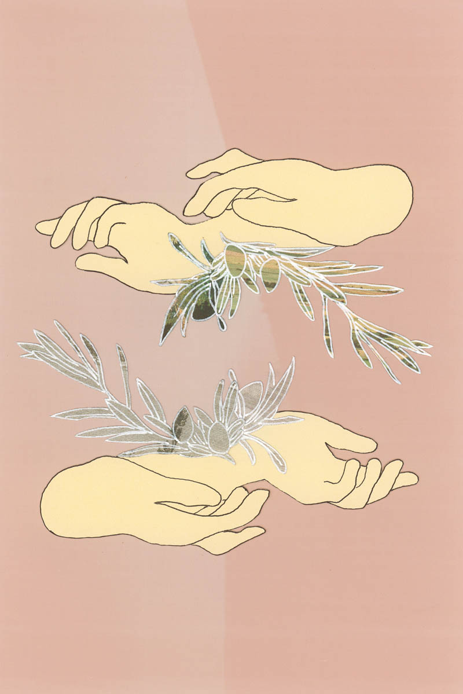

In the wake of the pandemic, in which lockdowns began to dissipate, restrictions eased, and the world was waving its arms at me: I began to dream a reoccurring dream.
In this dream fruit started growing on my wrists. They were pomegranate seeds at first, sticking around my veins and covering my skin like a crimson spiral. I didn’t know what it was about this dream that disturbed me. After all, the pomegranate typically symbolises fertility, beauty, and eternal life in Greek and Persian mythology. It is within this Greek mythology that the pomegranate is also known as the ‘fruit of the dead’ and believed to have sprung from the blood of Adonis. Adonis is the god of beauty and desire who was worshipped in Phoenicia but was later adopted by the Greeks. Pomegranates feature prominently in the myth of Persephone and her forced marriage to Hades, the god of the Underworld.
I understand that fruit has a symbolism of death in dreams, particularly when it is rotting. But the pomegranate wasn’t rotting, and I was not afraid of death. At least, not in the spiritual sense of the word. Death is a rebirthing. Many people believe that death is a transition from one life to the next. Evidently, it was this transition from living inwardly during isolation and the anxiety of the outwardly world reopening. It was during this time, that a relationship where I wasn’t being treated well, was nearing its end. I was broken, in my heart and spirit. I had nobody to rely on but myself. And a time that was needed for recovery and recuperation, was instead used to survive and work tirelessly. A reality that for many, is not uncommon. Yet this dream sprung out of my psyche like a godmother, and I could not tell at first, what message it was trying to speak.
It was the blood of the pomegranate that unsettled me. Sticking around my skin like bleeding cuts. I could have been drinking the juice from my wrists or making breakfast for a lover or even blossoming into a ripe pomegranate. But rather, the dream panned on my wrists, filming them as though I was holding them out for video evidence.
A documentary. There was no music.
As I didn’t journal these dreams (though they stayed with me), I cannot remember the time frame, but it was later in the year that the dream resurrected. This time it showed itself as green olives growing around my wrists. They were stitched in this time. Again, like a spiral circling my veins. The wounds around my wrists, covered in olives that became a part of a second skin. I woke up sweating.
There are many resources with differing interpretations of the green olive in a dream. In part, it depends on how the olives are presented. A dream of removing pits from olives may represent a conciliation, a dream of an olive tree may represent a sense of security. A dream of olive oil may suggest fluidity with self - that you will not be able to count on anyone’s help. You will have to trust your strength, will, and courage only.
But I wasn’t sure, I just felt disgusted. I didn’t eat olives for a long time after that.
There were all kinds of interpretations online about wrists in dreams. To harm your wrists interpreted good fortune. I think that interpretation flustered me. The skin on your wrists is one of the most delicate areas. For all those that grew up wounding such a tender area, to escape their realities – are aware of its tenderness. The love I grew up with as a child, was one of inconsistencies, where you lived on edge, and hypervigilance was as natural to me as playing. It takes a lot of self-reflection and patience to see the ways you are still choosing these feelings as an adult. Whether that be falling in love with somebody who mirrors your parent, or other dangerous avenues that only exasperate this pattern of high highs and low lows.
If dreaming about death symbolises an end of something, then dreaming about near-death symbolises a foreboding. To be living in a state of almost, of half-there, of an ambivalence towards living. Everyday that I choose to heal in my solitude. I am healing my dreams. I am healing the lens I see myself through. I don’t betray myself anymore, I don’t want to die anymore. The rebirthing and abundance of fruit grows on my wrists. And the wound, is where you send your love to, where you give water and light and medicine. I take myself for walks around my neighbourhood, looking up at the blossoming wattle – fragrant and breathing.